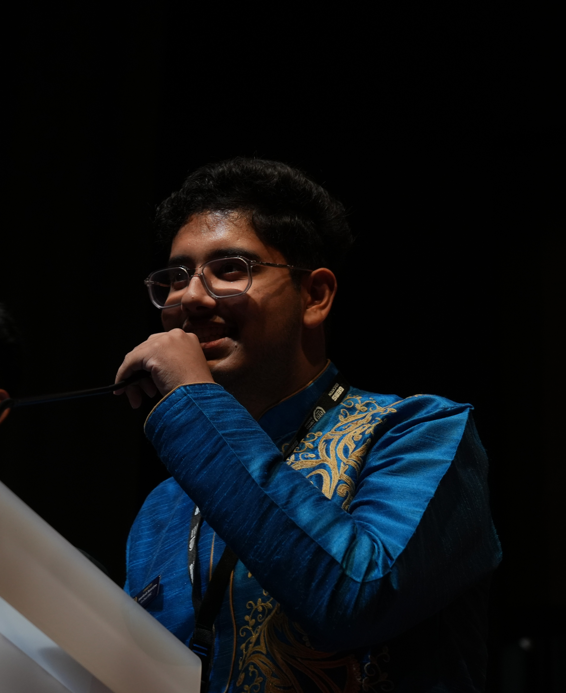

Amritesh Banerjee
Undergraduate AI Researcher
I am an incoming undergraduate researcher at the Manning College of Information and Computer Sciences, University of Massachusetts Amherst.
My research focuses on AI evaluation, collaborative language models, biomedical AI, and graph machine learning. I develop benchmarks, evaluation frameworks, and scalable machine learning systems for trustworthy artificial intelligence.
Experience
Incoming Research Intern - BioNLP Lab
University of Massachusetts Amherst
Conducting research in biomedical natural language processing. Focusing on the architectural evaluation and deployment of language models within clinical contexts.
Research Intern - eBrain Lab
New York University Abu Dhabi
Collaborating with Dr. Muhammad Shafique and Dr. Nouhaila Innan on computational methodologies for medical image processing. Engineering hybrid-operator synthesis pipelines to algorithmically mitigate metal artifacts in three-dimensional Computed Tomography (CT) scans.
Selected Publications
Banerjee, A., Basit, A., Joseph, R. R., Innan, N., & Shafique, M.
VoxelSynth3D: Interpretable Volumetric Image-Domain Metal Artifact Reduction with a Paired Synthetic CLINIC Benchmark
Accepted at IEEE EMBS International Conference on Biomedical and Health Informatics (BHI 2026)